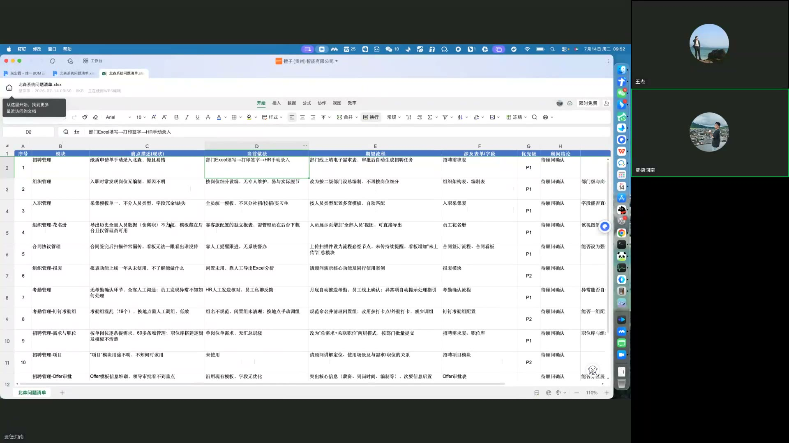
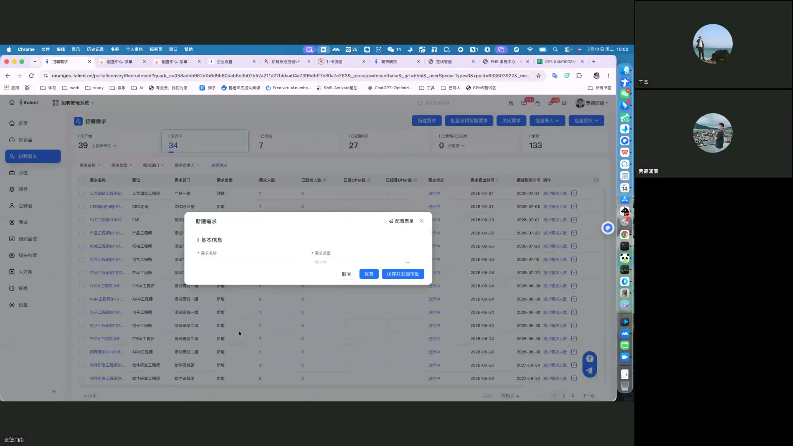
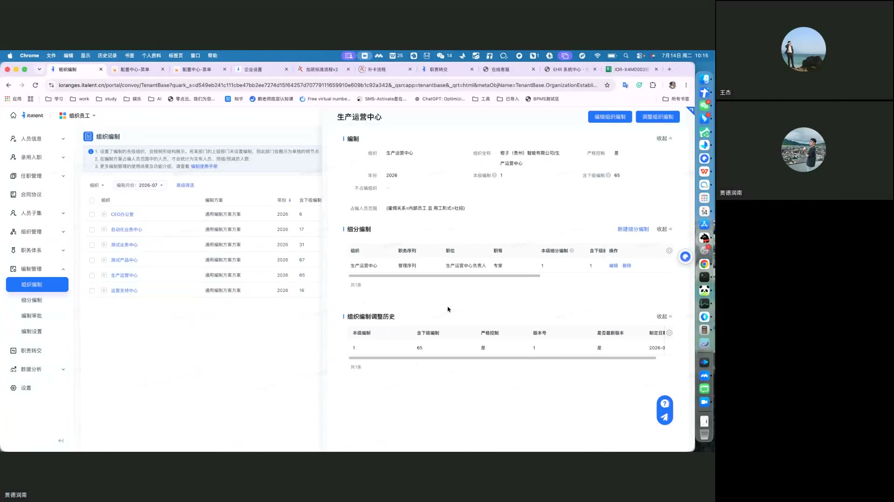
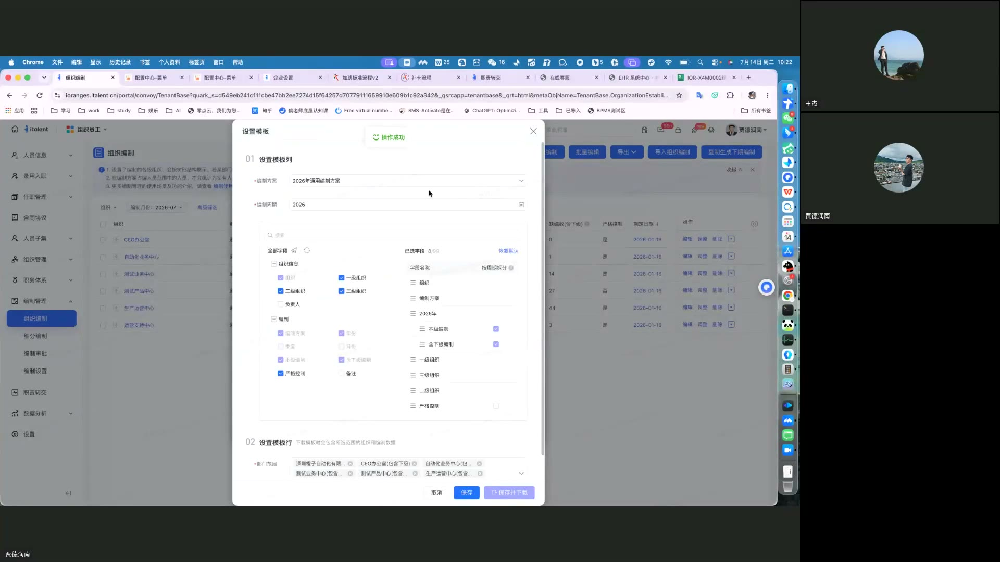
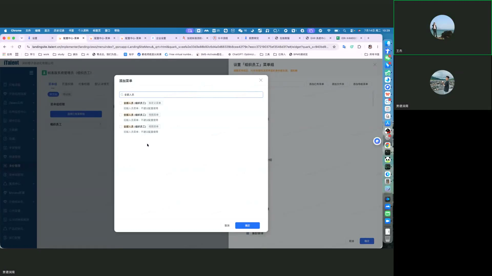
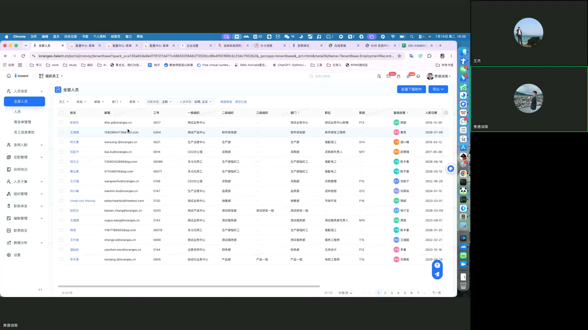
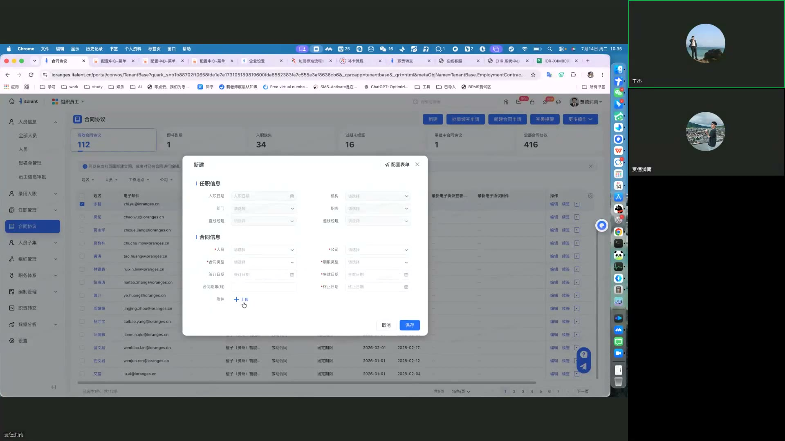
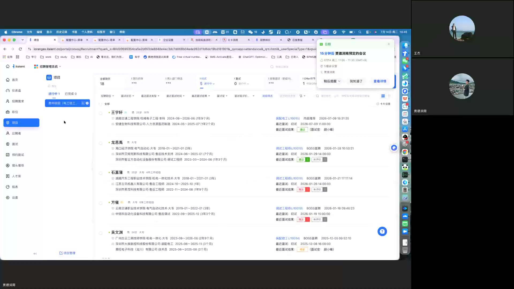
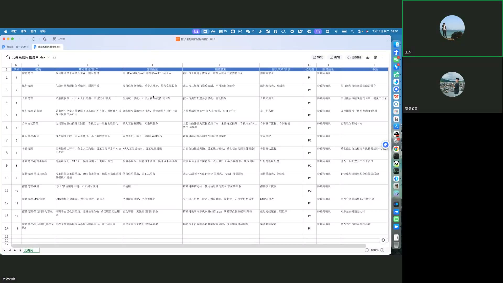

↑ 顶部
🍊 橙子互动 iTalent 招聘系统操作手册
⚡ 1. 快速入口速查

📸 视频 06:00 · 招聘需求列表（iTalent 核心入口之一）
系统基于 iTalent 平台,左侧导航栏分 9 大模块。本手册重点讲日常 80% 工作涉及的高频模块。
| 模块 | 导航路径 | 使用频次 |
|---|
| 招聘需求 | 招聘管理 → 招聘需求 | ⭐⭐⭐⭐⭐ 最高 |
| 编制管理 | 组织管理 → 编制模板 | ⭐⭐⭐⭐ 高 |
| 信息采集规则 | 招聘管理 → 动态信息表管理表 | ⭐⭐⭐ 中 |
| 花名册 | 人员信息 → 全部人员 | ⭐⭐⭐⭐ 高 |
| 合同协议 | 合同管理 → 合同协议 | ⭐⭐⭐ 中 |
| 考勤月报 | 考勤管理 → 月度确认 | ⭐⭐⭐ 中 |
| 项目(招聘) | 招聘管理 → 项目 | ⭐⭐ 低 |
💡 统一登录地址: https://ioranges.cn/itale.../TenantBase/Login(咨询 IT 获取最新链接)
📝 2. 招聘需求管理
📸 视频 06:00 · 招聘需求列表（一个需求可关联多个职位）
2.1 场景痛点
当前有 39 条 在执行招聘需求,由少数 HR 专员管理,逐条创建工作量大、效率低。
2.2 解决方案:批量导入 + 一对多关联

📸 视频 10:00 · 新建招聘需求弹窗（带数据校验与命名规范提示）
iTalent 支持两种优化方式,可根据实际情况选择。
方式 A:一个招聘需求关联多个职位
1导航到招聘管理 → 招聘需求
点击右上角"批量创建招聘需求"按钮。
2填写需求基本信息
在"新建需求"对话框中,填写需求名称(建议格式:职位+部门+数量,例如"产品工程师-研发中心-3人")。
3关联多个职位
在"关联职位"区域,点击"添加职位",从下拉列表中选择多个相同/不同职位(支持跨部门)。
4保存并发布
点击"保存并发起审批",走流程后自动同步到职位库。
⚠️ 注意:多个职位共用同一需求时,任一职位完成招聘可能导致整个需求关闭。如需重启,需手动"重新激活"。
方式 B:批量导入(推荐用于年初/年中大量需求)
1下载模板
在"招聘需求"列表页 → 右上角"批量导入招聘需求"按钮 → 下载 Excel 模板。
2填写模板
按列填写:需求名称、需求部门、需求人数、关联职位编码、需求类型、优先级等必填项。
3上传
上传填写好的 Excel,系统自动校验数据并提示错误行。确认后批量创建。
💡 校招场景参考:可参考校招客户的"一次性导入所有需求与职位"做法,大幅提升效率。
2.3 命名规范建议
| 字段 | 建议命名 | 说明 |
|---|
| 需求名称 | 职位+部门+数量 | 例:产品工程师-研发中心-3人 |
| 需求类型 | 校招/社招/实习生/高端引进 | 用于后续数据分类 |
⚠️ 不建议:把需求名称直接改为职位名称。需求与职位属不同概念,混淆不利于长期管理。
🏢 3. 编制与组织管理

📸 视频 25:00 · 组织编制列表（按层级控总人数）
3.1 现状问题
当前启用"细分编制"并设定了职级、序列、职位等多重限制,导致新员工入职时常提示"无编制"。根本原因是:细分编制适用于对岗位构成有严格要求的企业,多数企业仅控制组织层级总人数即可。
3.2 解决方案:改用"组织编制"

📸 视频 32:00 · 编制模板设置（按层级自动汇总）
1停用旧编制方案
导航:组织管理 → 编制模板,将原有"细分编制"方案状态改为"已停用"。
2创建新组织编制方案
点击"新建编制方案",按以下配置:
- 编制方案名:
2026年度编制方案
- 编制类别:2026
- 控制维度:只勾选"组织"(取消职级/岗位/序列维度)
- 编制范围:全员(含校招/社招,排除实习生)
3设置模板字段
在"设置模板"对话框中(参考 f032 截图),勾选需要控制的字段:
- ✅ 部门(必选)
- ✅ 一级组织(必选)
- ✅ 二级组织(必选)
- ❌ 职级(取消)
- ❌ 岗位(取消)
4设置部门与下级
在"02 设置模板运行"步骤,确认勾选"新增下的本级到下级路径"选项,确保下级组织可联动调整。
5导入编制数据
使用"导入组织编制"功能,按模板批量导入各级编制人数。点击"保存并下载"完成。
💡 实习生处理:在编制方案中将"实习生"雇佣类型排除,实习生不占编制名额。
💡 灵活性:调整后允许初级人员替代中级岗位空缺,提升用人灵活性,不影响预算管理。
📋 4. 信息采集模板配置

📸 视频 39:00 · 动态信息表（校招/社招/实习生差异化配置·关键截图）
4.1 现状问题
当前所有人员使用相同的信息采集模板,无法区分校招 / 社招 / 实习生不同渠道,数据收集不够精准。
4.2 解决方案:按"人员范围"差异化模板
1导航到信息表管理
路径:招聘管理 → 动态信息表管理表。在"动态信息表管理表(组织员工)"页签中,点击"动态信息表"。
2添加菜单
点击"添加菜单"按钮,选择关联人员范围:
- 校招生(应届毕业生)→ 单独模板
- 社招(经验人士)→ 单独模板
- 实习生 → 单独模板(可选)
3配置差异化字段
为每类人员设置不同的必填项:
- 校招生:学校、专业、毕业时间、成绩单
- 社招:前公司、离职原因、薪资证明、推荐人
- 实习生:实习周期、导师、可到岗时间
🎯 效果:不同人员进入系统时,自动弹出对应模板,数据收集精准度提升,后续分析更准确。
👥 5. 花名册与人员导出

📸 视频 40:00 · "全部人员"菜单（花名册统一导出入口）
5.1 现状问题
原需分别导出"在职人员"和"离职人员",字段不一致难以合并,每月做花名册报送时效率低。
5.2 解决方案:"全部人员"菜单(已实施)
已指导 IT 添加"全部人员"菜单,可在同一界面筛选包含所有状态人员。
1导航
人员信息 → 全部人员。顶部状态筛选器包含:在职 / 离职 / 试用期 / 见习期 / 停薪留职等所有状态。
2自定义字段
列表顶部筛选器支持按:部门、工号、姓名、任职状态、雇佣类型、职级等过滤。
3导出
点击右上角"导出"按钮,可自定义导出字段(列),满足跨部门花名册报送需求。
💡 建议:每月初固定日期统一导出,作为部门月度花名册报送标准。
📄 6. 合同协议管理

📸 视频 45:00 · 合同协议列表（关闭手工入口后统一走流程）
6.1 现状问题
当前存在"新建合同"和"续签"等非流程化操作入口,HR 可直接创建合同而不走审批,容易遗漏附件上传。
6.2 解决方案:关闭非流程入口,强制走流程
1导航到合同列表
合同管理 → 合同协议。页面顶部显示关键指标:
- 全部合同数:112
- 到期数:1
- 入职缺失:34 ⚠️(需跟进)
- 过期未续签:16
2关闭非流程入口(需管理员操作)
导航:权限管理 → 按钮权限 → 找到合同模块 → 关闭"新建合同"和"续签"按钮权限 → 保留"新建合同申请"和"续签申请"。
3设置流程必填项
在"合同申请"流程的"任职信息"和"合同信息"节点中,设置"电子协议附件"为必填项,确保线下签署扫描件及时上传。
6.3 合同缺失监控
两种方式主动监控合同完整性:
| 方式 | 操作 | 频率 |
|---|
| A. 合同缺失列表 | 合同管理 → 入职缺失查看 34 个待补 | 每周 |
| B. 入职流程嵌入 | 在入职流程中加"合同附件"字段,作为完成条件 | 实时 |
📅 7. 考勤月报确认
7.1 已开启功能
已开启"月报确认"功能,设置适用范围为全公司,向下级组织共享。
7.2 自动化规则
| 环节 | 说明 |
|---|
| 触发时机 | 每个考勤周期结束后(通常次月 1 日) |
| 推送对象 | 全员 |
| 确认期限 | 3 天内 |
| 逾期处理 | 系统自动确认(减少争议) |
🎯 效果:HR 无需每月手动催确认,争议解决有据可依。
📁 8. 招聘项目与简历管理

📸 视频 55:00 · 招聘项目列表（专项招聘归类）
8.1 项目功能(用于专项招聘归类)
导航:招聘管理 → 项目。可创建项目用于归类专项招聘任务,例如:
- 校招项目:2026 校招-华南区
- 组织升级项目:管理层引进计划
- 关键岗位项目:飞针高级工程师
1创建项目
点击"新建项目" → 填写项目名、起止时间、负责人、参与部门。
2关联职位
在项目详情页"关联职位"区域,加入本次项目要招聘的所有职位。
3跟踪面试进度
项目仪表盘显示每个职位的:投递数、面试数、Offer 数、入职数。
8.2 简历管理(前程无忧 51job 渠道)
⚠️ 问题:简历未自动归档是因归档规则匹配失败。当前设置优先按职位编号匹配,其次按名称与工作地点。
RPA 插件批量获取完整简历
1安装 RPA 插件
联系 IT 安装"前程无忧 RPA 简历抓取插件",获取完整简历(含联系方式)。
2配置职位编号
在招聘网站发布职位时,保留职位编号(iTalent 自动生成,例如 RW2026-001)。这确保系统能准确识别并归档至对应职位。
3批量获取
在"简历管理 → 51job 简历"页面,使用"批量获取完整简历"功能,提取所有联系方式。
💡 关键:职位编号是简历自动归档的唯一可靠标识。发布招聘广告时务必保留,不要修改。
❓ 9. 常见问题 FAQ

📸 视频 00:00 · 会议原始需求表（飞书多维表格 → iTalent 实施）
Q1: 招聘需求名称填什么?
建议格式:职位+部门+数量。例:产品工程师-研发中心-3人。不要直接用职位名。
Q2: 新员工入职提示"无编制"怎么办?
两种情况:
- 旧方案问题:已停用细分编制,改用新组织编制方案(参考第 3 章)
- 新方案下确实无名额:联系 HRBP 调整编制或申请扩编
Q3: 合同附件忘了上传,系统能提醒吗?
能。在"合同管理 → 入职缺失"列表可看到 34 个待补合同,每周跟进。
Q4: 51job 简历为什么没自动归档?
99% 是因为职位编号不匹配。检查招聘网站发布时是否保留了 iTalent 的职位编号(格式 RWYYYY-NNN)。
Q5: 信息采集字段怎么按校招/社招区分?
在"动态信息表管理表"中,添加菜单时选择不同"人员范围",即可为校招/社招/实习生配置差异化字段(参考第 4 章)。
Q6: 月度考勤 HR 还要手动催确认吗?
不需要。系统会在次月 1 日自动推送月报,3 天内未反馈自动确认。
Q7: 一个招聘需求能关联多个职位吗?
能。但要小心:任一职位完成招聘可能导致整个需求关闭。如需保留,选择"复制"而非"完成"。